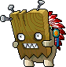
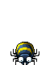
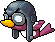
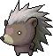
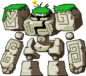
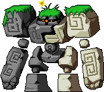

파란 포션
소비드랍 몬스터 170종
이 아이템을 주는 몬스터 170종

우드 마스크Lv.23 · 회피 10유적 발굴지2
트릭스터Lv.23 · 회피 10에오스탑 99층
트위터Lv.39 · 회피 17에오스탑 6층
흑저Lv.43 · 회피 15하늘 숲 깊은 곳
스톤골렘Lv.55 · 회피 15골렘의사원입구
믹스골렘Lv.59 · 회피 20골렘의 숲드랍 정보는 고전 메이플 서버 데이터(Cosmic, AGPL-3.0) 기준 참고용이고 일부는 메이플랜드 자료로 확인했어요. 드랍률은 넣지 않았어요.